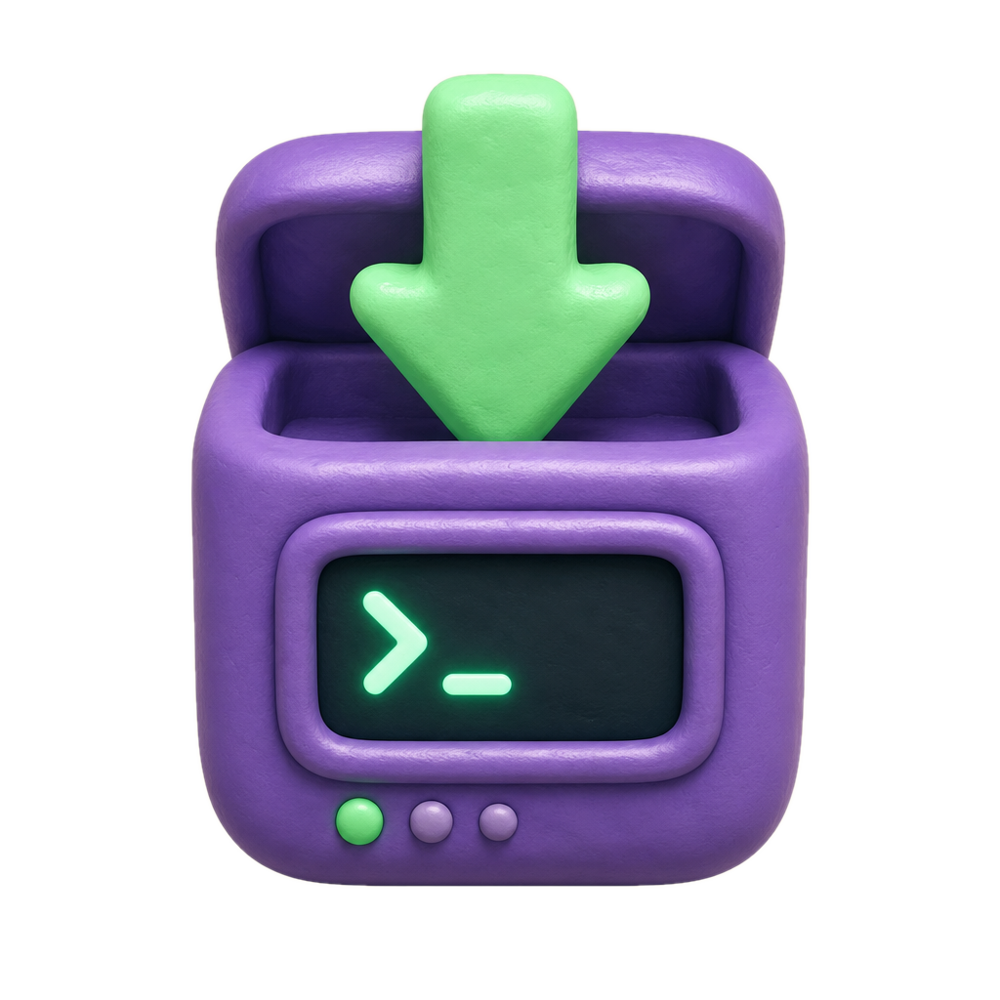
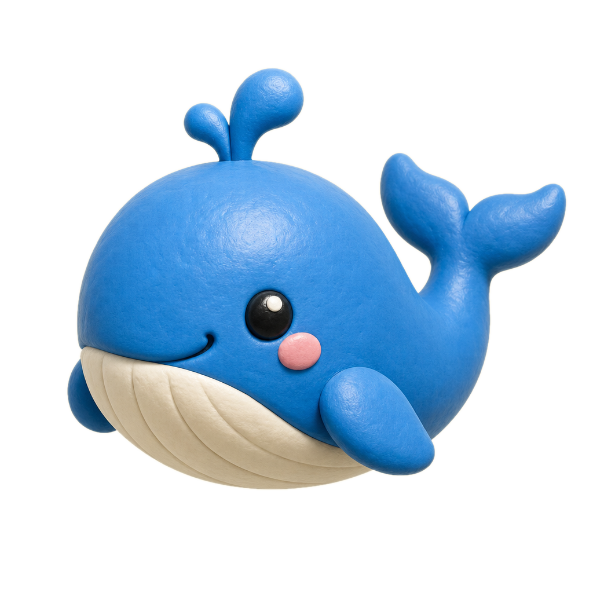

▶
本期 4 步搞定

① 安装 Claude Code
检查 Node.js & Git
一键安装 + 验证版本号
一键安装 + 验证版本号
② 准备 CC Switch
Windows 用 MSI / Mac 用 DMG
轻量化管理客户端
轻量化管理客户端

③ 接入 DeepSeek
创建并填入 API Key
启用 DeepSeek 高性价比模型
启用 DeepSeek 高性价比模型
④ 验证对接
重开终端 → 提问反问
完美体验极速响应
完美体验极速响应